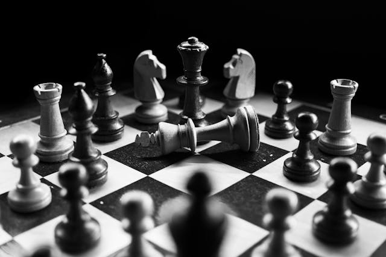

Mijn Hobby's
Kickboksen

Kickboksen is een geweldige manier om fit te blijven en mentale scherpte te ontwikkelen. Het verbetert niet alleen je fysieke kracht, maar helpt ook bij het ontwikkelen van discipline en focus.
Schaken
Schaken helpt me om strategieën te bedenken en beter te worden in logische besluitvorming. Het daagt me uit om vooruit te denken en verschillende scenario's te overwegen.
Voordelen van mijn Hobby's
Naast de fysieke en mentale voordelen, biedt kickboksen ook een geweldige sociale ervaring. Je ontmoet mensen met vergelijkbare interesses en kunt elkaar motiveren en ondersteunen.
Minder Gefocuste Hobby's
Naast mijn belangrijkste hobby's, heb ik ook enkele andere activiteiten die ik graag doe in mijn vrije tijd. Deze zijn minder intensief, maar bieden nog steeds veel plezier en ontspanning:
- Lezen
- Programmeren
- Films en series kijken
- zwemmen
Conclusie
Mijn hobby's zijn niet alleen een manier om te ontspannen, maar ook om mezelf uit te dagen en nieuwe vaardigheden te leren. Of ik nu train voor een wedstrijd in kickboksen of een schaakpartij speel, elke activiteit draagt bij aan mijn persoonlijke ontwikkeling.